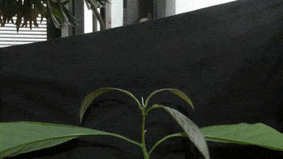

|  | |
|
The robustness of the forms observed in nature implies the existence of an active system of developmental regulation. The integration of perception completes the mechanical constraints acting on the system while making the link with the underlying biological mechanisms. To understand this regulation, I follow an approach oriented towards the identification of generic patterns of development, the design of minimal models of perception and the definition of morphometric experiments. My research forms a coherent whole on behavior and morphogenesis around the relations between perception and movement. By focusing on plants I have been more and more interested by the relation between perception and movements. Unlike animals, where development and movements are most of the time well separated, those processes are tied together through the action of growth. I then studied the emergence of 3 dimensional collective movements in animals, where the cohesion of the group is only given by perceptual interactions. |